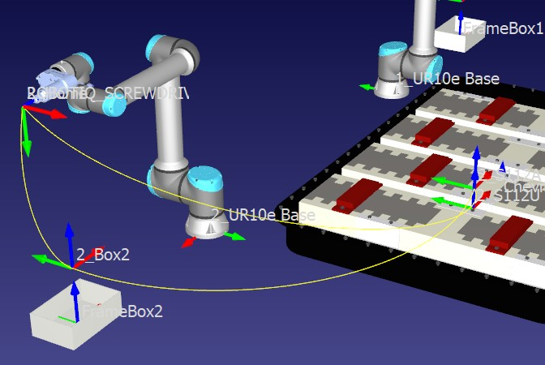

RESEARCH / AUTOMATION
Multi-robot battery disassembly.
Optimizing robot allocation and screw removal sequences for an electric vehicle battery prototype.

03 / 07- Institution
- IIT Madras
DiRO Lab - Timeline
- January – May 2025
- Tools
- Genetic algorithms
RoboDK
Overview
Electric vehicle battery disassembly involves many tightly constrained tasks. I worked on a multi-robot screw removal sequence and built a battery model prototype to simulate the process in RoboDK.
The project studied four, five, and six robot workstation configurations to understand the effect of robot count on idle time and cycle time.
What I worked on
- Optimized a screw disassembly task covering more than 100 screws without human intervention.
- Modeled an electric vehicle battery prototype and simulated disassembly sequences in RoboDK.
- Identified sequence constraints and compared workstation configurations to reduce idle and cycle time.
Faster disassembly
The identified constraints reduced the disassembly cycle time by 15–20% in the project simulations.
Case study details
+
Placeholder: add an annotated battery model, workstation comparison, sequence diagram, and before/after cycle-time chart.
Next projectManipulator path planning with MPPI